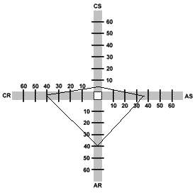

Ruby: The Class Object
October 19, 2014
Designing and Modifying Classes
My ToDoList Class
For this exercise I'm going to create a new class of Ruby object, the ToDoList.
class ToDoList
end
There are two preliminary questions to ask when you are populating your class:
- When I make a new instance of this class, what attributes should come built-in?
- When I'm designing methods to call on the class, should they be contained in it, or are they useful to other objects, like arrays and strings, not of this class?
Let's start with the first issue. What happens when we create a new object of the class with ToDoList.new? For this you open up a special method called "initialize," which allows you to manipulate what happens when an instance of the class is created.
class ToDoList
def initialize(title="untitled")
@born_on = Time.new
if title == "untitled"
@title = "untitled, #{@born_on.month}/#{@born_on.day}"
else @title = title
end
end
end
A ToDoList is for organization. Therefore you want to provide it with some self-organizing information. When a new ToDoList object is created, it will either accept a title as an argument, like ToDoList.new("shopping list") or it will call itself untitled, with info about the day and month it was created. So today a new list I create without passing it a title would be @title = "untitled, 10/19". To generate that title, the object has already made use of the first instance variable we gave it, a new Time object called @born_on.
@born_on is a great example of an instance variable. Instance variables can be used by any method you design within the class, and are especially good at tracking information that you want the object to keep tabs on even when a variety of methods have been applied. Many variables in Ruby are essentially created and discarded in the course of a given method's run. Instance variables are used in more persistent ways.
Let's go ahead and build methods for adding tasks to our list, and for crossing them off it:
class ToDoList
def initialize(title="untitled")
@born_on = Time.new
@tasks = []
if title == "untitled"
@title = "untitled, #{@born_on.month}/#{@born_on.day}"
else @title = title
end
end
def new_task(task)
@tasks << task.to_s
end
def finished(task)
p "Done with #{task}!"
@tasks.delete(task)
end
end
Now we have a new_task method that takes a task and pushes it into an instance variable, @tasks, that I added to the initialize method. Note that I could have created the @tasks list in the new_task method, but it makes more sense to create it at the creation of the list. Among them: creating it as a new empty array in new_task would have the effect of overwriting the list instead of adding to it.
So far our class looks pretty good. We can add items to a list, we can take them away (and get a satisfying message when we do so!)...but wait a minute, we can't yet view the whole list of things to do.
Here is where we get to a nice shorthand way that Ruby gives you for managing instance variables in your classes. If we want to display the array of tasks, we could write this method:
def show_list
@tasks
end
Because it is so common to want to check in on instance variables, however, Ruby has a shorthand way to auto-build methods for three kinds of instance variables. In this case, we want to only return @tasks, so we want to declare @tasks to be a reader attribute. This means that Ruby will automatically build a method to return @tasks when we call it on our ToDoList object. This really saves time and space when you have a class with, say, two dozen isntance variables that you want to read.
class ToDoList
attr_reader :tasks #maybe in the future, this will look like:
#attr_reader :tasks, :finished_tasks, :high_priority
def initialize(title="untitled")
@born_on = Time.new
[...]
You can see we used symbol notation, : to name on the @tasks variable as a readable attribute. Now, from outside the class, we can simply call the @tasks array by calling its name as a method:
list = ToDoList.new
list.new_task("blog")
p list.tasks #=>["blog"]
It's true that we could create a more fancy display method to show our list off, but it might also be the case that we'd want to create that display_array_fancy(my_array) method outside of the class. Sometimes you want to display lists of things other than the chores you've yet to do, after all.
For our ToDoList, we want to limit the access to the list of @tasks. So we wouldn't want to allow writeability on top of the readability we enable with attr_reader. The only way we want to "write" tasks is to add them to the end of our @tasks array, with the custom-built new_task method.
Ruby does provide similar shortcuts for instance variables for which you want to autobuild writer methods, e.g. list.tasks=("this would become the only task"), and those for which you want reader and writer methods. The first is attr_writer and the second is attr_accessor. Can you think of a different class of object for which you'd want to read and write a bunch of different variables? Try building a tic-tac-toe board, with each of the nine squares as an instance variable.